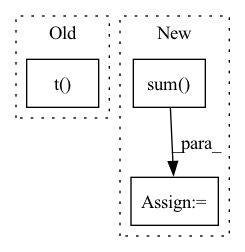

Pattern ID :31960
Before Change
def forward(self, user, item):
user = torch.from_numpy(self.interaction_matrix[user.cpu()].todense()).to(self.device)
item = torch.from_numpy(self.interaction_matrix[:, item.cpu()].todense()).to(self.device).t()
user = self.user_linear(user)
item = self.item_linear(item)
user = self.user_fc_layers(user)After Change
user = F.normalize(user, p=2, dim=1) // after normalize the vector, cosine distance reduced to dot product.
item = F.normalize(item, p=2, dim=1)
vector = torch.mul(user, item).sum(dim=1)
vector = torch.max(vector, self.min_y_hat) // restrict the result to [0, 1].
return vector
In pattern: SUPERPATTERN
Frequency: 3
Non-data size: 3
Instances Fragment ID: 93430086
Project Name: rucaibox/recbole
Commit Name: a63051c31f6cacc489710809995b2610a52b96d6
Time: 2020-09-17
Author: 893833413@qq.com
File Name: recbox/model/general_recommender/dmf.py
M Class Name: DMF
N Class Name: DMF
M Method Name: forward(3)
N Method Name: forward(3)
M Parent Class: GeneralRecommender
N Parent Class: GeneralRecommender
M File Name: recbox/model/general_recommender/dmf.py
N File Name: recbox/model/general_recommender/dmf.py
M Start Line: 73
M End Line: 82
N Start Line: 90
N End Line: 106
Before Change
code_lang_weights: torch.Tensor,
) -> Tuple[torch.Tensor, torch.Tensor]:
// basic vector product
y_pred = torch.mm(query_embeddings, code_embeddings.t() ) // B x B
// we are in the binary case
y_true = torch.diag(ground_similarity)
After Change
// masked_losses = losses * padded_pairs_mask.int().float()
if self.reduction == "sum":
per_sample_losses = torch.sum(losses, dim=[1, 2]) * code_lang_weights
total_loss = -torch.sum( per_sample_losses)
elif self.reduction == "mean":
per_sample_losses = torch.mean(losses, dim=[1, 2]) * code_lang_weights
total_loss = -torch.mean(per_sample_losses)
else: Fragment ID: 93430089
Project Name: mandubian/codenets
Commit Name: fa0b1863337116fdcc6a2692c9eeb25a0371d36a
Time: 2020-04-16
Author: p.voitot@samsung.com
File Name: codenets/losses.py
M Class Name: LambdaLossAndSimilarityScore
N Class Name: LambdaLossAndSimilarityScore
M Method Name: forward(5)
N Method Name: forward(5)
M Parent Class: LossAndSimilarityScore
N Parent Class: LossAndSimilarityScore
M File Name: codenets/losses.py
N File Name: codenets/losses.py
M Start Line: 202
M End Line: 270
N Start Line: 211
N End Line: 294
Before Change
//EMA cluster size
self.cluster_size.mul_(self.decay).add_(encodings_sum, alpha=1 - self.decay)
embed_sum = torch.matmul(encodings.t() , z_flattened)
//EMA embedding average
self.embed_avg.mul_(self.decay).add_(embed_sum, alpha=1 - self.decay)
After Change
self.embedding.embed_avg.data.mul_(self.decay).add_(embed_sum, alpha=1 - self.decay)
//cluster size Laplace smoothing
n = self.embedding.cluster_size.sum()
cluster_size = (
(self.embedding.cluster_size + self.eps) / (n + self.num_tokens * self.eps) * n
)
//normalize embedding average with smoothed cluster size Fragment ID: 93430088
Project Name: tgisaturday/dalle-lightning
Commit Name: e387b61c8c640b56c7cbd241d8ec60ab1f022611
Time: 2021-08-12
Author: jamesk1228@gmail.com
File Name: pl_dalle/modules/vqvae/quantize.py
M Class Name: EMAVectorQuantizer
N Class Name: EMAVectorQuantizer
M Method Name: forward(2)
N Method Name: forward(2)
M Parent Class: nn.Module
N Parent Class: nn.Module
M File Name: pl_dalle/modules/vqvae/quantize.py
N File Name: pl_dalle/modules/vqvae/quantize.py
M Start Line: 85
M End Line: 118
N Start Line: 184
N End Line: 215